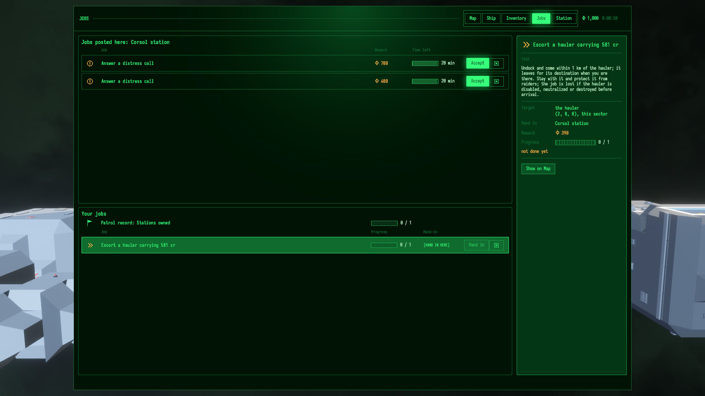
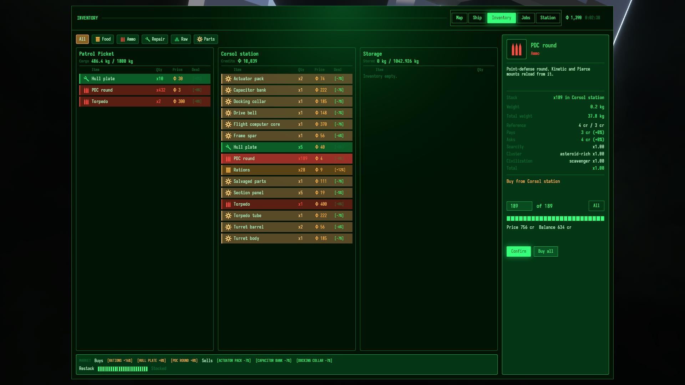
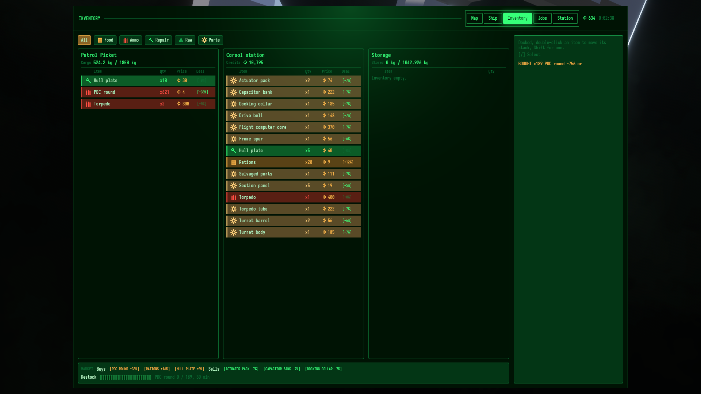

Ammo vs job reward: one shipped escort job, three runs
Task 20261026-003806 (v0.17.0). Balance investigation evidence. Report date 2026-10-30. This page measures one job and proposes conditional test points. It does not change shipped balance.
Result. The same escort job (Corsol station, 581 cr cargo, 1 raider) paid 390 cr in every run. PDC use was not stable: 1057 rounds in run 2 and 136 in run 3, the quantitative reference set; run 1, a separate visual sample, used 568. The cause of this spread is not known. Do not average these runs into one job cost.
At the 4 cr ask, the reward replaces 97 rounds. Every run used more. Full replacement would cost 4228 cr (run 2) and 544 cr (run 3): a gap of 3838 cr and 154 cr over the reward (run 1: 1882 cr). These are arithmetic. Only run 3 actually bought every spent round. In run 2 the station had 189 rounds, so the buy was capped at 189 for 756 cr and 868 rounds stayed unreplaced.
The player starts with 1000 cr and 2000 preloaded rounds. So one job does not block the next sortie in any run. The loss shows as fewer credits and a smaller pool, not yet as a stop.
Labels: measured read from game state or a settled transaction; derived arithmetic on measured values; modeled a candidate rule applied to these samples, not tested.
1. Which runs count, and why
| Run | Role in this report | Captures | Launch env | Renderer adapter | Exit evidence | Evidence |
|---|---|---|---|---|---|---|
| 2 | Quantitative reference | Off: NOVA_CAPTURE unset; 0 "Screenshot saved" lines | Launch line not saved; captures unset per owner | NVIDIA GeForce RTX 3060 Ti | run_end Success; "cycle complete, no panic"; log clean; no EXIT= line, exit code not recorded | timeline, log, provenance |
| 3 | Quantitative reference | Off: NOVA_CAPTURE unset; 0 "Screenshot saved" lines | Launch line not saved; captures unset per owner | NVIDIA GeForce RTX 3060 Ti | run_end Success; "cycle complete, no panic"; EXIT=0 | timeline, log, provenance |
| 1 | Illustrative visual sample, not matched | On: 5 frames written | Full env not recorded; command reconstructed | llvmpipe (software) | run_end Success; "cycle complete, no panic"; EXIT=0 | timeline, log, provenance |
Run 1 armed captures. Its walk waits for each screenshot to finish, so its frame sequence differs from runs 2-3, and its full launch environment is unknown. It also used a different renderer. These differences confound any comparison, so run 1 supplies the screenshots and an extra data point only. No difference between runs is attributed to timing or to the renderer; the cause of the spread is unverified.
Capture arms on the variable's presence with any value (crates/nova_autopilot/src/capture.rs:55-57), so NOVA_CAPTURE=0 turns captures on. A capture-off run must unset it: env -u NOVA_CAPTURE.
Shared setup, all three runs measured
| Field | Value | Source |
|---|---|---|
| Source | HEAD ed7204ad727952e4560574c192f6a7fe9ba25aea (run_start git_sha in every timeline), dirty tree: untracked example, Cargo.toml registration | run1/provenance.txt |
| Example | system_job_ammo_economics, sha256 0cd804d33a09aa8a6e97f389e30af5cf7cbbd355879e84d2989dd0727b4c150a at report time | examples/systems/system_job_ammo_economics.rs |
| World seed, role | Seed 2 (the escort walk's pinned seed); military start | examples/systems/shared/located_jobs.rs:116, 134-138 |
| Start | 1000 cr; 1000 PDC rounds in hold + 2 x 500 in magazines = 2000 preloaded; 2 + 6 torpedoes | accept markers; crates/nova_authoring/src/base_content/start_roles.rs:106-117 |
| Hull | Patrol Picket: two PDC Turret (Kinetic), one Torpedo Bay (Serpent) | accept markers; run 1 Inventory frame |
| Poster | Corsol station, sector_2_8_0_cluster_1_5_0_station_0; asteroid-rich, scavenger; price factors x1.00 | market markers |
| Job | ...station_0#1.0, escort, cargo 581 cr, 1 raider, reward 390 cr (290 + 100 fee) | accept markers |
| Outcome | Job done, not dropped; hauler reached its mark; raider survived, not neutralized; hand-in paid 390 cr; station 10429 to 10039 cr | survival, done, hand-in markers |
2. Per-run results
| Measure | Run 2 | Run 3 | Run 1 (illustrative) | Label |
|---|---|---|---|---|
| PDC rounds used, whole ledger | 1057 | 136 | 568 | measured fight ledger, residual 0 |
| used by the done marker / after it | 1055 / 2 | 136 / 0 | 566 / 2 | measured / derived |
| Torpedoes used | 0 | 0 | 0 | measured |
| Usable pool at hand-in (hold + magazines) | 943 (10 + 933) | 1864 (1000 + 864) | 1432 (432 + 1000) | measured |
| Raider hit points, start / lowest | 10410 / 9339 | 10410 / 10226 | 10410 / 10057 | measured |
Hauler hauler_hp_low | [3576, 3920] | [3580, 3920] | [3520, 3920] | measured, rounded |
| Reward credited | 390 | 390 | 390 | measured |
| Player credits: accept / hand-in / after buy | 1000 / 1390 / 634 | 1000 / 1390 / 846 | 1000 / 1390 / 634 | measured |
| Station PDC stock before buy (target) | 189 (189) | 189 (189) | 189 (189) | measured |
| Ask | 4 | 4 | 4 | measured |
| Rounds bought / paid | 189 / 756 | 136 / 544 | 189 / 756 | measured |
| Buy capped by station stock? | yes | no | yes | derived plan min(consumed, stock, affordable, fits) |
| Player hold PDC before / after buy | 10 / 199 | 1000 / 1136 | 432 / 621 | measured |
| Station stock after buy | 0 | 53 | 0 | measured |
| Net cash after buy (reward - paid) | -366 | -154 | -366 | measured net marker |
| Rounds not replaced | 868 | 0 | 379 | derived |
| Full replacement at 4 cr | 4228 | 544 | 2272 | derived, not paid |
| Gap: full replacement - reward | 3838 | 154 | 1882 | derived |
| Pool after buy, if magazines unchanged since hand-in | 1132 | 2000 | 1621 | derived; magazines not re-read after the buy |
Same price everywhere: ask 4 cr, factors x1.00, stock 189 at every buy. So the credit outcomes differ only by rounds used and by the stock cap. In run 3 the net cash (-154) equals the full gap, because the buy replaced every round. In runs 1 and 2 the net cash (-366) is not the cost of the fight: the stock cap stopped the spend at 756 cr.
3. Rounds and credits
4. Station market and stock
| Corsol station, PDC round | Value | Label |
|---|---|---|
| Stock / target before every buy | 189 / 189 | measured runs 1-3 |
| Ask / bid, factors | 4 / 3 cr; scarcity, cluster, civilization, total all 1.00; not clamped | measured runs 1-3 |
| Pane row text | [+0%] 4 x189 PDC round | measured runs 1-3 |
| Stock after buy | 0 (runs 1, 2); 53 (run 3) | measured |
| Ask at stock 0 (starved factor 1.5) | 6 cr | derived from market.rs:250-261; not quoted in a run |
| Restock 0 to 189 | 1800 s of play, linear | derived from restocked_count |
| Affordable at 4 cr after the hand-in | 347 rounds (1390 / 4) | derived; stock, not credits, bound runs 1-2 |
Run 2 used about 5.6x this station's whole PDC target (derived). At any price, this one station could not have replaced it in one visit. Other stations were not checked.
5. Run 1 screenshots (visual only)
Three genuine frames from run 1, written by the run under an isolated X display on the software renderer, and inspected for this report. No frame was made for this report. They show the UI path, not the reference numbers. The capture waits are one reason run 1 is not matched to runs 2-3. Two more run 1 frames (job-escort-done.png, job-escort-inspector-done.png) are not used; their hashes are in run1/SHA256SUMS.source.

job-escort-board.png). Balance 1,000 cr. The held escort pays 390 cr and reads "not done yet". The board's other offers are distress calls at 700 and 400 cr.
ammo-economics-buy-draft.png). Balance 1,390 cr; hold PDC x432; station PDC x189 at 4 cr; draft 189 of 189, price 756 cr, balance after 634 cr. Factors: scarcity x1.00, asteroid-rich x1.00, scavenger x1.00.
ammo-economics-bought.png). Balance 634 cr; hold PDC x621; station credits 10,795; station PDC row gone; log "BOUGHT x189 PDC round -756 cr"; restock strip "PDC round 0 / 189, 30 min".6. Source formulas
Paths relative to the repository root at ed7204ad7. Links open the local file.
| Rule | Formula or value | Source |
|---|---|---|
| PDC round reference price | ask 4 cr, bid 3 cr, 200 g | crates/nova_authoring/src/base_content/items.rs:57-65 |
| Rail slug, torpedo | 40 / 30 cr; 400 / 300 cr | items.rs:66-83 |
| Escort reward | cargo_cr / 2 + fee; cargo 300-2400 cr; fee 50 x (1..5). Here: 581 / 2 = 290, + 100 = 390 | crates/nova_gameplay/src/jobs.rs:93-100, 1270-1274, 1316-1321 |
| Distress, neutralize reward | 200 + 2 x fee (300-700); 400 + 2 x fee (500-900) | jobs.rs:101-104, 1322-1337 |
| Raiders per escort | min(1 + cargo / 700, 3); here 1 | jobs.rs:757-759 |
| Procure, recover rewards use the item ask | procure count x ask x 3/2 + fee; recover count x ask x 2 + fee | jobs.rs:1287, 1304 |
| Hand-in payment | station pays the full reward; refused when the station is short | jobs.rs:1592-1604 |
| Live price | reference x scarcity x cluster x civilization, clamped 0.25-3.0, rounded | crates/nova_gameplay/src/market.rs:367-412 |
| Scarcity | stock/target <= 1: starved (ask 1.5, bid 1.25) to 1.0; above: toward glut (0.9, 0.6) at 3x | market.rs:250-261; crates/nova_authoring/src/base_content/market.rs:14-31 |
| Armored civilization ammo | factor 1.25 (not active at Corsol) | base_content/market.rs:64 |
| Restock | linear, target x elapsed / 1800 s | market.rs:420-433; base_content/market.rs:38 |
| Station stock target | hold x lerp(0.04, 0.08, advancement) / 2, split by weight (PDC 2 of 14 when all ammo kinds are known), / item mass, min 1 for ammo | crates/nova_world_base/src/station_layout.rs:108-121, 475-500 |
| Idle reload from hold | magazines refill from finite inventory stock | crates/nova_ship/src/sections/ammo.rs:212-259, 421-473 (cited by TASK.md; not re-read here) |
| Fight driver (scripted) | hold the turret trigger on the weakest raider inside 2000 m | examples/systems/shared/located_jobs.rs:183-186, 1316-1326 |
| Capture switch | armed when NOVA_CAPTURE is present, any value | crates/nova_autopilot/src/capture.rs:55-57 |
| Buy plan and net | quantity min(consumed, stock, affordable, fits); replacement consumed x ask; net credited - paid | examples/systems/system_job_ammo_economics.rs:662, 800-810 |
7. Limitations
- Two matched runs. The reference set is runs 2 and 3. It shows a wide spread (136 to 1057 rounds) and no distribution. Do not average it.
- Spread cause unverified. Same seed, job, price and start. The runs differ in rounds used, raider damage (184 vs 1071 hit points) and magazine section ids. Nothing in this report explains why. No timing or renderer claim is made.
- Run 1 is not matched. Captures on, screenshot waits, unknown full env, software renderer.
- Scripted fire. The autopilot holds the trigger on the raider inside 2000 m. It does not model a player's fire discipline. The raider survived in every run. The ledger does not say what each round hit.
- Teleported berth. The walk teleports the player beside the station and onto its berth before the accept and the hand-in. Travel costs nothing here.
- Unstaged. A development example on a dirty tree, not a staged
nova-probeset or anova-benchplay. - Not counted: repairs, travel ammo, time and opportunity costs, other stations, the 100 cr board refresh fee.
- Preloaded start. 2000 rounds and 1000 cr at the start hide the loss for the first sorties. One job tells little about a chain of jobs.
- No general balance claim. One job type, one station, one seed.
- Run 2's process exit code was not recorded. Its timeline ends in
run_endSuccess and its log is clean.
8. Candidate prices and rewards modeled
Test points for the owner, not decisions or production values. The task forbids an invented minimum reward, guaranteed ammo, rate or free refill; none is proposed. Each recommendation below is conditional on what a larger matched repeat set shows.
8.1 Rounds a reward replaces
Cell: floor(reward / ask), the most spent rounds a job's reward can buy back. Reward rule: floor(cargo x k) + fee with this job's cargo 581 and fee 100. Current is ask 4, k 0.5. Compare with rounds used: run 3 136, run 2 1057 (run 1: 568).
| PDC ask | k 0.5 (current): 390 | k 1.0: 681 | k 1.5: 971 | k 2.0: 1262 |
|---|---|---|---|---|
| 1 cr | 390: run 3 | 681: run 3 | 971: run 3 | 1262: runs 3, 2 |
| 2 cr | 195: run 3 | 340: run 3 | 485: run 3 | 631: run 3 |
| 3 cr | 130: none | 227: run 3 | 323: run 3 | 420: run 3 |
| 4 cr (current) | 97: none | 170: run 3 | 242: run 3 | 315: run 3 |
Modeled. "run 3" means the cell covers run 3's 136 rounds; "runs 3, 2" covers both reference runs. Red: covers neither; grey: run 3 only; blue: both. Assumes full stock, no travel, no repairs, and no scarcity price rise (a starved station asks up to 6 cr).
8.2 Conditional recommendations
| If a larger matched set shows | Then test first | Why, from this evidence | Implications to check |
|---|---|---|---|
| Typical use near run 3 (low hundreds of rounds) | Reward: escort k 1.0 at ask 4 (170 rounds covered); k 1.5 as the upper point | Smallest change that covers 136 rounds with a margin. Keeps the PDC price and every rule that reads it. | Escort reward range 350-2650 (k 1.0) would pass distress (300-700) and neutralize (500-900) at most cargo values; the station must hold the reward (jobs.rs:1592). |
| Typical use near run 2 (about 1000 rounds) | Rounds per job and supply before price | Only ask 1 with k 2.0 covers 1057 rounds. Run 2 was stock-capped at 189: a cheaper round does not help when the station has none. | Station goods weights (station_layout.rs:114-121) and the shared restock clock (base_content/market.rs:38) affect every item. |
| The spread stays wide (136 to 1000+) on the same seed | Find the cause of the spread before any price or reward test | A rule that suits one end fails the other: k 1.0 at ask 4 covers 136 but leaves 1057 at 3547 cr short. | Needs a diagnostic of what the rounds hit; keep any fixture changes in the authorized research lane. |
| Any of the above, if a price cut is wanted | Price: ask 2-3 cr with a reward change; never price alone | Price alone at the integer floor (1 cr) covers run 3 but not run 2 or run 1. | Procure and recover rewards for PDC fall with the ask (jobs.rs:1287, 1304); start-role value of 1000 rounds falls; bid must stay below ask; stock count does not change (stock is by mass). |
9. Matched follow-up tests
Every set: same example, seed 2, military, captures unset with env -u NOVA_CAPTURE, record the full launch line and exit code. Compare each candidate set to a baseline set from the same build. Compare ledgers and transactions, never durations.
- Baseline repeat set. More capture-off runs of the current build, to see whether rounds used cluster or stay spread. Runs 2 and 3 are its first two members.
- Spread diagnostic. Within the baseline set, ledger what the player's rounds hit (raider, missed, other) next to raider damage. Keep the added ledger in the authorized research example.
- Candidate sets. On a scratch build only: the 8.2 test points (k 1.0 and 1.5 at ask 4; ask 2-3 with k 1.0-1.5). Assert the ledger closes (consumed = start pool - end usable pool, residual 0) and the buy pays quantity x quoted ask; report capped and uncapped buys apart.
- Next-sortie chain. After the buy, accept and fly a second and third combat job. Record pool, credits and stock at each hand-in. This is the task's done condition, and it removes the preloaded-start blind spot.
- Other combat kinds. The same ledger on neutralize and distress (seed 16,
bounty_hunter). - Human reference. One
nova-benchplay of this job, to compare a player's rounds used with the scripted trigger.
Focused research examples and scratch experiments are authorized; production balance changes are not. No new permanent behavior test is proposed.
10. Adding more runs
| Run | Set | PDC used | Reward | Bought / paid | Capped | Net after buy | Full replace | Gap | Raider HP low | Timeline sha256 |
|---|---|---|---|---|---|---|---|---|---|---|
| 2 | reference | 1057 | 390 | 189 / 756 | yes | -366 | 4228 | 3838 | 9339 | 5577ef3d59f5e4dea6ad8ce64c71accc28749b1971506195d48288241f558a2c |
| 3 | reference | 136 | 390 | 136 / 544 | no | -154 | 544 | 154 | 10226 | 3827063203f9aa4edf9beb59cae2852bf9a5c90b8b2f3e75748126a6bd532419 |
| 1 | illustrative | 568 | 390 | 189 / 756 | yes | -366 | 2272 | 1882 | 10057 | fa8f784e07714d79b41118219a861c873f501f8397aaaca8843e7def655caa49 |
11. Raw JSONL markers
Verbatim lines from each run's timeline: accept, done, survival, hand-in, fight ledger, market, buy and net.
Run 2 (reference)
sha256 5577ef3d59f5e4dea6ad8ce64c71accc28749b1971506195d48288241f558a2c, evidence/run2/timeline.jsonl, 10 lines.
{"t_real":11.809150144,"frame":215,"scenario_elapsed":6.013174208999995,"kind":"marker","name":"ammo economics: accept","data":{"job":{"job":"sector_2_8_0_cluster_1_5_0_station_0#1.0","poster":"sector_2_8_0_cluster_1_5_0_station_0","hauler":"sector_2_8_0_cluster_1_5_0_station_job_1_0_hauler_0","cargo_cr":581,"raiders":1,"reward_cr":390},"snapshot":{"player_cr":1000,"hold":{"PdcRound":1000,"Torpedo":2},"magazines":[{"section":"1945v1","name":"Torpedo Bay (Serpent)","item":"Torpedo","rounds":6,"capacity":6,"active":true},{"section":"1845v1","name":"PDC Turret (Kinetic)","item":"PdcRound","rounds":500,"capacity":500,"active":true},{"section":"1842v1","name":"PDC Turret (Kinetic)","item":"PdcRound","rounds":500,"capacity":500,"active":true}]}}}
{"t_real":103.219776706,"frame":2357,"scenario_elapsed":96.55803201500011,"kind":"marker","name":"ammo economics: done","data":{"job":"sector_2_8_0_cluster_1_5_0_station_0#1.0","dropped":false,"fired_so_far":1055,"snapshot":{"player_cr":1000,"hold":{"PdcRound":210,"Torpedo":2},"magazines":[{"section":"1945v1","name":"Torpedo Bay (Serpent)","item":"Torpedo","rounds":6,"capacity":6,"active":true},{"section":"1845v1","name":"PDC Turret (Kinetic)","item":"PdcRound","rounds":482,"capacity":500,"active":true},{"section":"1842v1","name":"PDC Turret (Kinetic)","item":"PdcRound","rounds":253,"capacity":500,"active":true}]}}}
{"t_real":103.304677359,"frame":2358,"scenario_elapsed":96.59899980200011,"kind":"marker","name":"outcome: the escorted hauler survives the ambush to its mark","data":{"job":"sector_2_8_0_cluster_1_5_0_station_0#1.0","sprung_at_secs":62.11900329589844,"threatened_secs":23.178237915039062,"raiders_hit":["sector_2_8_0_cluster_1_5_0_station_job_1_0_raider_0 9339/10410"],"raiders_disarmed":[],"first_hit_at_secs":74.20308685302734,"survived_secs":25.290199279785156,"hauler_hp_low":[3575.67333984375,3920.0],"raiders_left":1,"raiders":1}}
{"t_real":103.391654045,"frame":2360,"scenario_elapsed":96.68709224000011,"kind":"marker","name":"outcome: the world marks the escort job done","data":{"job":"sector_2_8_0_cluster_1_5_0_station_0#1.0","body":"sector_2_8_0_cluster_1_5_0_station_job_1_0_hauler_0","body_stands":true}}
{"t_real":105.209458756,"frame":2412,"scenario_elapsed":97.6061397280001,"kind":"marker","name":"ammo economics: hand-in","data":{"job":"sector_2_8_0_cluster_1_5_0_station_0#1.0","reward_cr":390,"player_cr_before":1000,"player_cr_after":1390,"credited_cr":390,"station_cr_before":10429,"station_cr_after":10039,"station_paid_cr":390}}
{"t_real":105.209458756,"frame":2412,"scenario_elapsed":97.6061397280001,"kind":"marker","name":"ammo economics: fight ledger","data":{"items":[{"item":"PdcRound","magazines_at_accept":2,"start_pool":2000,"end_usable_pool":943,"consumed":1057,"stranded_in_disabled":0,"lost_with_section":0,"turret_rounds_fired":1057,"residual":0},{"item":"Torpedo","magazines_at_accept":1,"start_pool":8,"end_usable_pool":8,"consumed":0,"stranded_in_disabled":0,"lost_with_section":0,"turret_rounds_fired":null,"residual":null}],"lost_magazines":[],"accept":{"player_cr":1000,"hold":{"PdcRound":1000,"Torpedo":2},"magazines":[{"section":"1945v1","name":"Torpedo Bay (Serpent)","item":"Torpedo","rounds":6,"capacity":6,"active":true},{"section":"1845v1","name":"PDC Turret (Kinetic)","item":"PdcRound","rounds":500,"capacity":500,"active":true},{"section":"1842v1","name":"PDC Turret (Kinetic)","item":"PdcRound","rounds":500,"capacity":500,"active":true}]},"hand_in":{"player_cr":1390,"hold":{"PdcRound":10,"Torpedo":2},"magazines":[{"section":"1945v1","name":"Torpedo Bay (Serpent)","item":"Torpedo","rounds":6,"capacity":6,"active":true},{"section":"1845v1","name":"PDC Turret (Kinetic)","item":"PdcRound","rounds":480,"capacity":500,"active":true},{"section":"1842v1","name":"PDC Turret (Kinetic)","item":"PdcRound","rounds":453,"capacity":500,"active":true}]}}}
{"t_real":105.405026291,"frame":2418,"scenario_elapsed":97.6061397280001,"kind":"marker","name":"outcome: the hand-in pays the escort job","data":{"job":"sector_2_8_0_cluster_1_5_0_station_0#1.0","reward_cr":390,"player_cr":1390,"station_cr":10039}}
{"t_real":106.027657599,"frame":2440,"scenario_elapsed":97.6061397280001,"kind":"marker","name":"ammo economics: market","data":{"station":"sector_2_8_0_cluster_1_5_0_station_0","station_name":"Corsol station","trades":true,"has_trader_market":true,"item":"PdcRound","stock":189,"target_stock":189,"ask_cr":4,"bid_cr":3,"reference_ask_cr":4,"reference_bid_cr":3,"factor_scarcity_ask":1.0,"factor_cluster_ask":1.0,"factor_civilization_ask":1.0,"factor_total_ask":1.0,"clamped":false,"pane_row":"InventoryRowPartnerPdcRound","pane_row_texts":["[+0%]","4","x189","PDC round"],"consumed":1057,"derived_replacement_cr":4228,"player_cr":1390,"player_free_g":1398000,"buy_quantity":189}}
{"t_real":107.133818974,"frame":2473,"scenario_elapsed":97.6061397280001,"kind":"marker","name":"ammo economics: buy","data":{"quantity":189,"quoted_ask_cr":4,"expected_cr":756,"player_cr_before":1390,"player_cr_after":634,"paid_cr":756,"station_cr_before":10039,"station_cr_after":10795,"station_took_cr":756,"player_rounds_before":10,"player_rounds_after":199,"station_rounds_before":189,"station_rounds_after":0}}
{"t_real":107.133818974,"frame":2473,"scenario_elapsed":97.6061397280001,"kind":"marker","name":"ammo economics: net","data":{"reward_cr":390,"credited_cr":390,"pdc_consumed":1057,"pdc_bought":189,"buy_paid_cr":756,"derived_full_replacement_cr":4228,"net_after_buy_cr":-366,"replaced_every_spent_round":false}}
Run 3 (reference)
sha256 3827063203f9aa4edf9beb59cae2852bf9a5c90b8b2f3e75748126a6bd532419, evidence/run3/timeline.jsonl, 10 lines.
{"t_real":8.85081346,"frame":215,"scenario_elapsed":4.903759347,"kind":"marker","name":"ammo economics: accept","data":{"job":{"job":"sector_2_8_0_cluster_1_5_0_station_0#1.0","poster":"sector_2_8_0_cluster_1_5_0_station_0","hauler":"sector_2_8_0_cluster_1_5_0_station_job_1_0_hauler_0","cargo_cr":581,"raiders":1,"reward_cr":390},"snapshot":{"player_cr":1000,"hold":{"PdcRound":1000,"Torpedo":2},"magazines":[{"section":"1958v1","name":"PDC Turret (Kinetic)","item":"PdcRound","rounds":500,"capacity":500,"active":true},{"section":"1957v1","name":"PDC Turret (Kinetic)","item":"PdcRound","rounds":500,"capacity":500,"active":true},{"section":"1585v1","name":"Torpedo Bay (Serpent)","item":"Torpedo","rounds":6,"capacity":6,"active":true}]}}}
{"t_real":100.056981905,"frame":2265,"scenario_elapsed":95.20596825200015,"kind":"marker","name":"ammo economics: done","data":{"job":"sector_2_8_0_cluster_1_5_0_station_0#1.0","dropped":false,"fired_so_far":136,"snapshot":{"player_cr":1000,"hold":{"PdcRound":1000,"Torpedo":2},"magazines":[{"section":"1958v1","name":"PDC Turret (Kinetic)","item":"PdcRound","rounds":424,"capacity":500,"active":true},{"section":"1957v1","name":"PDC Turret (Kinetic)","item":"PdcRound","rounds":440,"capacity":500,"active":true},{"section":"1585v1","name":"Torpedo Bay (Serpent)","item":"Torpedo","rounds":6,"capacity":6,"active":true}]}}}
{"t_real":100.160103103,"frame":2266,"scenario_elapsed":95.25731100900015,"kind":"marker","name":"outcome: the escorted hauler survives the ambush to its mark","data":{"job":"sector_2_8_0_cluster_1_5_0_station_0#1.0","sprung_at_secs":60.53079605102539,"threatened_secs":35.585609436035156,"raiders_hit":["sector_2_8_0_cluster_1_5_0_station_job_1_0_raider_0 10226/10410"],"raiders_disarmed":[],"first_hit_at_secs":72.63990020751953,"survived_secs":25.30260467529297,"hauler_hp_low":[3580.0,3920.0],"raiders_left":1,"raiders":1}}
{"t_real":100.258494212,"frame":2268,"scenario_elapsed":95.35915783500015,"kind":"marker","name":"outcome: the world marks the escort job done","data":{"job":"sector_2_8_0_cluster_1_5_0_station_0#1.0","body":"sector_2_8_0_cluster_1_5_0_station_job_1_0_hauler_0","body_stands":true}}
{"t_real":102.537365496,"frame":2320,"scenario_elapsed":96.39970405800014,"kind":"marker","name":"ammo economics: hand-in","data":{"job":"sector_2_8_0_cluster_1_5_0_station_0#1.0","reward_cr":390,"player_cr_before":1000,"player_cr_after":1390,"credited_cr":390,"station_cr_before":10429,"station_cr_after":10039,"station_paid_cr":390}}
{"t_real":102.537365496,"frame":2320,"scenario_elapsed":96.39970405800014,"kind":"marker","name":"ammo economics: fight ledger","data":{"items":[{"item":"PdcRound","magazines_at_accept":2,"start_pool":2000,"end_usable_pool":1864,"consumed":136,"stranded_in_disabled":0,"lost_with_section":0,"turret_rounds_fired":136,"residual":0},{"item":"Torpedo","magazines_at_accept":1,"start_pool":8,"end_usable_pool":8,"consumed":0,"stranded_in_disabled":0,"lost_with_section":0,"turret_rounds_fired":null,"residual":null}],"lost_magazines":[],"accept":{"player_cr":1000,"hold":{"PdcRound":1000,"Torpedo":2},"magazines":[{"section":"1958v1","name":"PDC Turret (Kinetic)","item":"PdcRound","rounds":500,"capacity":500,"active":true},{"section":"1957v1","name":"PDC Turret (Kinetic)","item":"PdcRound","rounds":500,"capacity":500,"active":true},{"section":"1585v1","name":"Torpedo Bay (Serpent)","item":"Torpedo","rounds":6,"capacity":6,"active":true}]},"hand_in":{"player_cr":1390,"hold":{"PdcRound":1000,"Torpedo":2},"magazines":[{"section":"1958v1","name":"PDC Turret (Kinetic)","item":"PdcRound","rounds":424,"capacity":500,"active":true},{"section":"1957v1","name":"PDC Turret (Kinetic)","item":"PdcRound","rounds":440,"capacity":500,"active":true},{"section":"1585v1","name":"Torpedo Bay (Serpent)","item":"Torpedo","rounds":6,"capacity":6,"active":true}]}}}
{"t_real":102.785895648,"frame":2326,"scenario_elapsed":96.39970405800014,"kind":"marker","name":"outcome: the hand-in pays the escort job","data":{"job":"sector_2_8_0_cluster_1_5_0_station_0#1.0","reward_cr":390,"player_cr":1390,"station_cr":10039}}
{"t_real":103.548661675,"frame":2348,"scenario_elapsed":96.39970405800014,"kind":"marker","name":"ammo economics: market","data":{"station":"sector_2_8_0_cluster_1_5_0_station_0","station_name":"Corsol station","trades":true,"has_trader_market":true,"item":"PdcRound","stock":189,"target_stock":189,"ask_cr":4,"bid_cr":3,"reference_ask_cr":4,"reference_bid_cr":3,"factor_scarcity_ask":1.0,"factor_cluster_ask":1.0,"factor_civilization_ask":1.0,"factor_total_ask":1.0,"clamped":false,"pane_row":"InventoryRowPartnerPdcRound","pane_row_texts":["[+0%]","4","x189","PDC round"],"consumed":136,"derived_replacement_cr":544,"player_cr":1390,"player_free_g":1200000,"buy_quantity":136}}
{"t_real":104.820974835,"frame":2381,"scenario_elapsed":96.39970405800014,"kind":"marker","name":"ammo economics: buy","data":{"quantity":136,"quoted_ask_cr":4,"expected_cr":544,"player_cr_before":1390,"player_cr_after":846,"paid_cr":544,"station_cr_before":10039,"station_cr_after":10583,"station_took_cr":544,"player_rounds_before":1000,"player_rounds_after":1136,"station_rounds_before":189,"station_rounds_after":53}}
{"t_real":104.820974835,"frame":2381,"scenario_elapsed":96.39970405800014,"kind":"marker","name":"ammo economics: net","data":{"reward_cr":390,"credited_cr":390,"pdc_consumed":136,"pdc_bought":136,"buy_paid_cr":544,"derived_full_replacement_cr":544,"net_after_buy_cr":-154,"replaced_every_spent_round":true}}
Run 1 (illustrative)
sha256 fa8f784e07714d79b41118219a861c873f501f8397aaaca8843e7def655caa49, evidence/run1/timeline.jsonl, 10 lines.
{"t_real":73.768576849,"frame":216,"scenario_elapsed":50.63598388400001,"kind":"marker","name":"ammo economics: accept","data":{"job":{"job":"sector_2_8_0_cluster_1_5_0_station_0#1.0","poster":"sector_2_8_0_cluster_1_5_0_station_0","hauler":"sector_2_8_0_cluster_1_5_0_station_job_1_0_hauler_0","cargo_cr":581,"raiders":1,"reward_cr":390},"snapshot":{"player_cr":1000,"hold":{"PdcRound":1000,"Torpedo":2},"magazines":[{"section":"1550v1","name":"PDC Turret (Kinetic)","item":"PdcRound","rounds":500,"capacity":500,"active":true},{"section":"1549v1","name":"Torpedo Bay (Serpent)","item":"Torpedo","rounds":6,"capacity":6,"active":true},{"section":"1493v1","name":"PDC Turret (Kinetic)","item":"PdcRound","rounds":500,"capacity":500,"active":true}]}}}
{"t_real":178.743149642,"frame":432,"scenario_elapsed":145.82502852699997,"kind":"marker","name":"ammo economics: done","data":{"job":"sector_2_8_0_cluster_1_5_0_station_0#1.0","dropped":false,"fired_so_far":566,"snapshot":{"player_cr":1000,"hold":{"PdcRound":600,"Torpedo":2},"magazines":[{"section":"1550v1","name":"PDC Turret (Kinetic)","item":"PdcRound","rounds":334,"capacity":500,"active":true},{"section":"1549v1","name":"Torpedo Bay (Serpent)","item":"Torpedo","rounds":6,"capacity":6,"active":true},{"section":"1493v1","name":"PDC Turret (Kinetic)","item":"PdcRound","rounds":500,"capacity":500,"active":true}]}}}
{"t_real":179.823344098,"frame":433,"scenario_elapsed":146.37851663099997,"kind":"marker","name":"outcome: the escorted hauler survives the ambush to its mark","data":{"job":"sector_2_8_0_cluster_1_5_0_station_0#1.0","sprung_at_secs":122.2388687133789,"threatened_secs":24.378087997436523,"raiders_hit":["sector_2_8_0_cluster_1_5_0_station_job_1_0_raider_0 10057/10410"],"raiders_disarmed":[],"first_hit_at_secs":134.35955810546875,"survived_secs":25.57110595703125,"hauler_hp_low":[3520.0,3920.0],"raiders_left":1,"raiders":1}}
{"t_real":180.776202962,"frame":435,"scenario_elapsed":147.37172093799995,"kind":"marker","name":"outcome: the world marks the escort job done","data":{"job":"sector_2_8_0_cluster_1_5_0_station_0#1.0","body":"sector_2_8_0_cluster_1_5_0_station_job_1_0_hauler_0","body_stands":true}}
{"t_real":201.665065506,"frame":490,"scenario_elapsed":158.64420668100007,"kind":"marker","name":"ammo economics: hand-in","data":{"job":"sector_2_8_0_cluster_1_5_0_station_0#1.0","reward_cr":390,"player_cr_before":1000,"player_cr_after":1390,"credited_cr":390,"station_cr_before":10429,"station_cr_after":10039,"station_paid_cr":390}}
{"t_real":201.665065506,"frame":490,"scenario_elapsed":158.64420668100007,"kind":"marker","name":"ammo economics: fight ledger","data":{"items":[{"item":"PdcRound","magazines_at_accept":2,"start_pool":2000,"end_usable_pool":1432,"consumed":568,"stranded_in_disabled":0,"lost_with_section":0,"turret_rounds_fired":568,"residual":0},{"item":"Torpedo","magazines_at_accept":1,"start_pool":8,"end_usable_pool":8,"consumed":0,"stranded_in_disabled":0,"lost_with_section":0,"turret_rounds_fired":null,"residual":null}],"lost_magazines":[],"accept":{"player_cr":1000,"hold":{"PdcRound":1000,"Torpedo":2},"magazines":[{"section":"1550v1","name":"PDC Turret (Kinetic)","item":"PdcRound","rounds":500,"capacity":500,"active":true},{"section":"1549v1","name":"Torpedo Bay (Serpent)","item":"Torpedo","rounds":6,"capacity":6,"active":true},{"section":"1493v1","name":"PDC Turret (Kinetic)","item":"PdcRound","rounds":500,"capacity":500,"active":true}]},"hand_in":{"player_cr":1390,"hold":{"PdcRound":432,"Torpedo":2},"magazines":[{"section":"1550v1","name":"PDC Turret (Kinetic)","item":"PdcRound","rounds":500,"capacity":500,"active":true},{"section":"1549v1","name":"Torpedo Bay (Serpent)","item":"Torpedo","rounds":6,"capacity":6,"active":true},{"section":"1493v1","name":"PDC Turret (Kinetic)","item":"PdcRound","rounds":500,"capacity":500,"active":true}]}}}
{"t_real":203.255020125,"frame":496,"scenario_elapsed":158.64420668100007,"kind":"marker","name":"outcome: the hand-in pays the escort job","data":{"job":"sector_2_8_0_cluster_1_5_0_station_0#1.0","reward_cr":390,"player_cr":1390,"station_cr":10039}}
{"t_real":208.468034124,"frame":521,"scenario_elapsed":158.64420668100007,"kind":"marker","name":"ammo economics: market","data":{"station":"sector_2_8_0_cluster_1_5_0_station_0","station_name":"Corsol station","trades":true,"has_trader_market":true,"item":"PdcRound","stock":189,"target_stock":189,"ask_cr":4,"bid_cr":3,"reference_ask_cr":4,"reference_bid_cr":3,"factor_scarcity_ask":1.0,"factor_cluster_ask":1.0,"factor_civilization_ask":1.0,"factor_total_ask":1.0,"clamped":false,"pane_row":"InventoryRowPartnerPdcRound","pane_row_texts":["[+0%]","4","x189","PDC round"],"consumed":568,"derived_replacement_cr":2272,"player_cr":1390,"player_free_g":1313600,"buy_quantity":189}}
{"t_real":216.071281009,"frame":557,"scenario_elapsed":158.64420668100007,"kind":"marker","name":"ammo economics: buy","data":{"quantity":189,"quoted_ask_cr":4,"expected_cr":756,"player_cr_before":1390,"player_cr_after":634,"paid_cr":756,"station_cr_before":10039,"station_cr_after":10795,"station_took_cr":756,"player_rounds_before":432,"player_rounds_after":621,"station_rounds_before":189,"station_rounds_after":0}}
{"t_real":216.071281009,"frame":557,"scenario_elapsed":158.64420668100007,"kind":"marker","name":"ammo economics: net","data":{"reward_cr":390,"credited_cr":390,"pdc_consumed":568,"pdc_bought":189,"buy_paid_cr":756,"derived_full_replacement_cr":2272,"net_after_buy_cr":-366,"replaced_every_spent_round":false}}